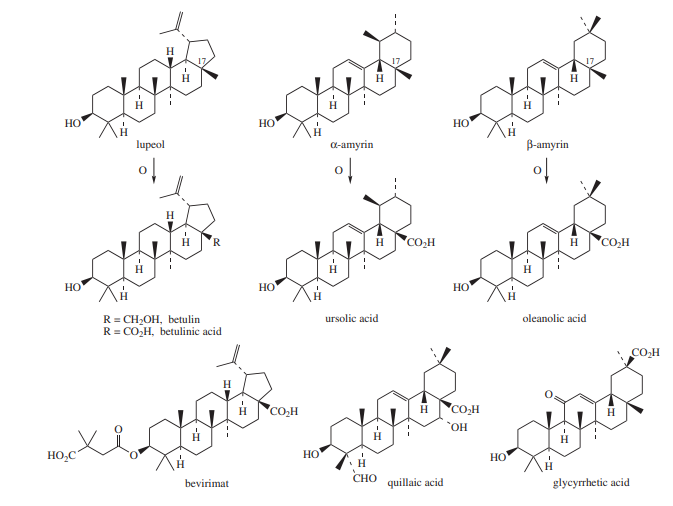
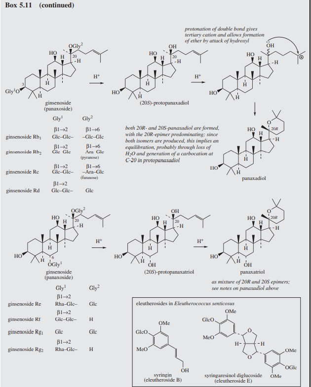

⇒ Plant materials containg saponins have long been used in many parts of the world for their detergent properties.
Saponins
→ glycosides which at low conc
- produce a forthing in aqueous solution.
- surfactant
- soap-like
→ originally used for cleansing clothes
- Saponaria officinalis; Caryophylaceae
- Quillaja saponaria; Rosaceae
- haemolysis
- lysing red blodd cells [by ↑ permability of the plasma membrance]
- highly toxic [when injected into the bloodstream] - [ arrow poisons]
- Sarsaparilla for example is rich in steroidal glycosides [used in non-alcocholic beverage production]
- by low absorption & by hydorlysis.
- sugar(s) + an aglycone (saponegin) → which can be both — triterpenoid — steroidal
- about 10% in quillaia bark
Triterpenoid saponins
→ rare in monocotyledons
→ but abudant in many dicotyledonous families.
- e.g. // β-amyrin subgroup posses
- carboxylic acid group ← (derived by oxidation of methyl gorups)
- at position 4 (C-23) , 17(C-28) , 20 (C-30)
- on the aglycone ring system being subject to such oxidation
- formyl (-CHO)
- hydroxymethyl (-CH2OH) groups
- may be encounterd and 11 and 16 may also be oxygenated.
→ Sugar residues are usally attached to the 3-hydroxyl
- with 1 to 6 monosaccharide units
- (most common : glucose , galactose , rhamnose , arabinose )
- with a uronic acid units
- ( glucuronic acid + galacturonic acid)
- quillaic acid
- Glycyrriza glabra; Leguminosae/Fabaceae
- contains : glycyrrhizin (a mixture of potassium and calcium salts of glycyrrizhic acid + 2 glucuronic acid units
- 
- herbal drug derived from the roots of
- Panax ginseg; Araliaceae
- widely held to counter stress/improve general well-being.
- Panax ginseg; Araliaceae
- dammarane skeleton → so called " ginsenosides"
- are most likely the biologically active components.
→ Liquorice (licorice; glycirrhiza)
→ upleed rhizome and root
- perenial herb of
- Glycyrrhiza glabra ; Leguminosae/Fabaceae
- G.glabra var. typica [Spanish liquorice]
- 1.5m high
- purplish-blue colour
- long roots and thin rhizomes
- Spain,Italy,France
- G.glabra var. glandulifera (Russian liqorice)
- Russia
- G.uraselis (Manchurian liquorice)
- China
- then evaporation to give a "dark black" solid.
→ sweet tase and foaming properties due to saponins.
→ Liquorice root contain:
- 20% of water-soluble extractives.
- 3-5% of the root
- comprised of glycyrrhizin (mixture of pottasium and calcium with glycyrrhizic acid
- also contaings flavonoids — liquiritigenin and isoliquiritigenin and their corresponding glycosides.
- considerable amount of
- sugars ( glucose and surcose)
- considerable amount of
- Glycyrrhizin is reported to be:
- 50-150 x sweet as surcose and liquorice
- used to mask bitter subst. in pharmacy
- surfactant properties
- mild expectorant
- mild anti-inflammatory and mineralocrorticoids activities.
- treatment of rheumatoid arthritis ,Addisons's disease(adrenocortical insufficiency)
- 50-150 x sweet as surcose and liquorice
- inhibit enzymes that catalyse the conversion of prostagladins and glucocorticoids into inactive metabolites.
- ↑ levels of prostaglandins (e.g. // PG2/PGF2a) and hydrocortisone
- semi-synthetic of glycyrrhetic acid
- hemisuccinate carbenoxolone sodium
- widely prescribed for gastric/duodenal ulcers
- hemisuccinate carbenoxolone sodium
- semi-synthetic of glycyrrhetic acid
Quillaia
→ Quillaia bark or soapbark derived from
- Quillaja saponaria ; Rosaceae
- and other Quillaja species
- found in Chile,Peru,Bolivia
- and other Quillaja species
- 10% saponins
- a mixture known as "commercial saponi"
- used as foaming agent in beveratge
- and as emulsifier in foods.
- a mixture known as "commercial saponi"
- pharmaceutical preparations in the form of quillaia tincture is used as emulsifying agents
- particullary for fats,tars and volatile oils.
- on hydrolysis those saponins liberates
- quillaic acid(as the aglycone) together with sugars,uronic acid.
- great promise as
- immunoadjuvants (substance added to vaccines and other immunotherapies designed to improve the body's immune response to the antigen
Ginseng
→ roots of the herbaceous plants
- Panax ginseng ; Araliaceae
- China,Korea,Russia
- (1.5–2%)
- Rb1 and Rg
- and related Panax species
- Usa, Canada
- (about 6%)
- s Rb1, Re, and malonylated Rb
- China and Russia
- (about 12%)
- Rd
- treatment of anaemia,diabetes,gastritis,insomnia,sexual impotence,general restorative,promiting health,longevity
→ pelled roots provides "white"ginseng
→ "red" ginseng is obtained by steming the root
- reputedly enhancing biological activity
- partial hydrolysis of esters and glycosides, [antixodiant activity derved form phenolic constituents]
- can lead to hypertension, nervousness, sleeplesness
- large number of triterpenoid saponins based on
- dammarane subgroup → "ginsenosides"
- derivatives of two main aglycones
- protopanaxodiol
- protopanaxotriol
- through the aglycone liberated on acid hydrolysis
- acid-catalyzed cyclization in the side-chain produce an ether ring
- derivatives of two main aglycones
- dammarane subgroup → "ginsenosides"
- 3 and 20 hydroxyl groups → diols series
- 6 and 20 hydroxyl groups → triols series.
→ Ginsenoside Rb1 is the most abudant constituent
→ The aglycone mixture of protopanaxadiol and protopanaxatriol (pandimex®) is being tested clinically
as an anticancer agent

STEROIDAL SAPONINS
→ Steroidal saponins
- similar biological properties to the triterpenoid saponins
- e.g. // surfactant and haemolytic activities
- but are less widely distributed in nature
- monocot families
- especially to Dioscoreaceae (Dioscorea)
- Agavaceae (Agave,Yucca)
- Liliaceae (Smilax,Trillium)
- in which side-chain of cholesterol has undergone modification to produce either
- spiroskeletal (spirostane saponins) e.g. // dioscin
- derived from the cholesterol side-chain by a series of oxygenation reactions,hydroxylation one of the methyl groups and C-16 and then producing a ketone funciton at C-22.
- this proposed intermediate is transformed into the hemiacetal and then the spiroketal.
- derived from the cholesterol side-chain by a series of oxygenation reactions,hydroxylation one of the methyl groups and C-16 and then producing a ketone funciton at C-22.
- hemiacetal (furostane saponins) e.g. // protodioscin
- spiroskeletal (spirostane saponins) e.g. // dioscin
- but steroisomers at C-25 exist e.g. // yamogenin
- second glycoside function at C-26 in the furostanes (usually glucose)
- fewer monosaccharide units than found with triterpenoid saponins
- 1 to 3 monsaccharide units are most common
- fewer monosaccharide units than found with triterpenoid saponins
- more sugar residues there are attached
- greater is the haemolytic activity
→ Diosgenin ; yams
- Dioscera spp; Dioscoreaceae
- diosgenin
- oral contraceptives and sex hormones
- edible species are
- Dioscorea alata and D.esculenta (Southeast Asia)
- D.rotundata
- D.cayenesis (West Africa)
- D.trifada (America)
- herbaceous,climbing,vine-like plants
- main productions come from Mexico
- D.composita (barbasco)
- 4-6% total saponins
- D.mexicana
- D.floribunda
- 6-8%
- D.colletti D.pathaica D.nipponica → China
- D.deltoidea → South Africa
→ tubers vaires
- usually increasing as tubers become older
Fenugreek
→ Trigonella foenum-graecum; Leguminosae/Fabaceae
- another commercial source of diosgenin
- spice material
- annual and grown widely escpecially in India,Marocco and Egypt
- strong characteristic odour
- 1-2% of sapogenins (principally diosgenin) and yamogenin
→ Sisal
- Agave sisalana ; Agavaceae
- it's also commercially,yielding hecogenin
- (hecogenin) → C-ring subst. provides a practical starting material of the corticosteroids
- it's also commercially,yielding hecogenin
- fibre production (ropes,sacking,matting)
- plant is large , rossete forming
- spine-tipped leaves
- sapogenin hecogenin → initially produced from the leaf waste (0.6-1.3% hecogenin)
- 12% hecogenin plus other sopogenin.
- other sapogenin such as tigogenin and neotigogenin are present.
- a 12-keto derivative with trans-fused A/B rings
- reduction of the Δ5 double bond
- a 12-keto derivative with trans-fused A/B rings
→ Ornithogalum saundersiae , Liliaceae
- cytotoxic, inhibiting the growth of various tumors cells
- 10-100 more potent than some clinical anticancer agents.
→ some steroidal alkaloids are nitrogen analgoues of steroidal saponins
- display similar properties
- surface activity
- haemolytic activity
- those are toxic when ingested
- Solasonine → aglycone: solasodine
- Solanum laciniatum
- S.khasianum ,Solanaceae
- Solasonine → aglycone: solasodine
- those are toxic when ingested
→ Steroidal saponins requires preliminary degradation to remove the ring systems containg the original cholesterol side-chain
- immaterial wheter these rings contain oxygen or nitrogen
→ Smilagenin and sarsasapogenin
- Sarsapilla (Smilax spp;Liliaceae/Smilacaceae)
- dried roots sometimes also rhizomes
- reduced forms of diosgenin and yamogenin
- S.aristolochiaefolia
- S.regeli
- S.febrifuga
- known in Mexican , Honduran , Ecuadorian sarsaparilla.
- woody climbers, indigenous in Central America
- history in the treatment of syphyllis,rheumatism,skin diseases
- now employed as a flavouring in the manuf. of un-alcolcholic beverage.
Yucca
→ Yucca brevifolia , Agavaceae
- potential source of srsasapogenin for steroid production.
- high levels of sapogenin 8-13% present in the seeds.
Ivy
→ whole or cut aerial leaves of
- Hedera helix Araliaceae
- collected in the spring
- climber and creeper
- widely distribued throught Europe / Asia
- pentacyclic triterpenoid genins
- hederagenin (a-hederin)
- bayogenin
- oleoanolic acid
- other constituents
- flavonoids (rutin,qurcetin)
- caffeic acid derivatives (chlorogenic,rosmaric acid)
- sterols
- polyacetylenes
- volatile oils.
{kind=link}
{kind=link}
{kind=link}
{kind=link}
{kind=link}